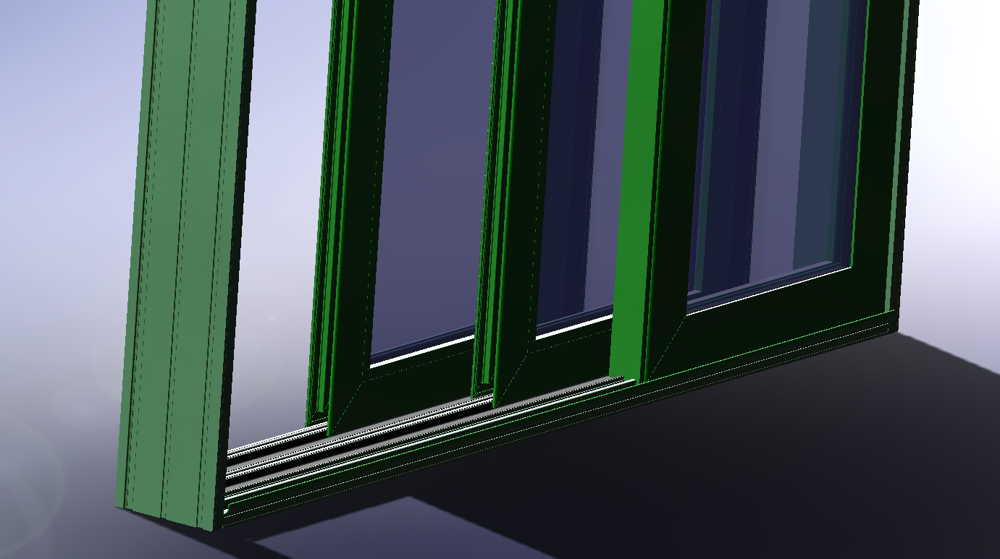
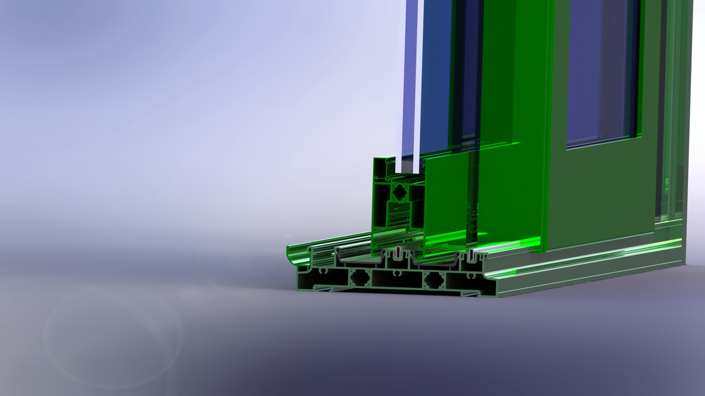
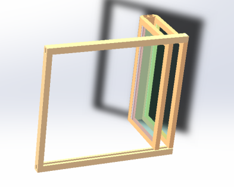
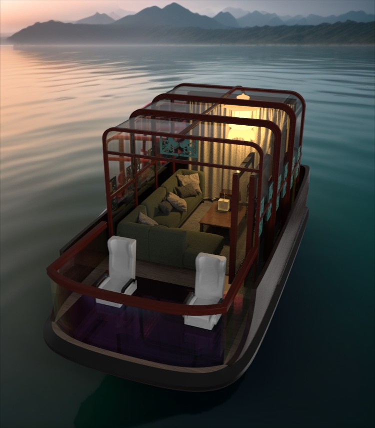

无人艇
景区观光无人艇设计
面向水域景区的观光无人艇设计。项目从游客与运营场景出发，探索无人驾驶技术进入水上游览后，如何回应不同游客的体验需求。
01 / 06
项目背景与设计挑战
景区无人艇正在解决水上无人移动的问题。电力推进与无人驾驶为游览提供了新的基础，但不同游客、天气与游览场景，对乘坐空间和观景方式提出了不同要求。


核心设计挑战
如何让无人观光艇从固定的水上交通工具，转变为能够适应不同场景与游览需求的水上体验空间？
02 / 06
用户洞察与机会定义
从游客需求、完整服务流程与现有产品出发，明确无人观光体验中尚未被充分回应的问题。
用户研究
年轻游客关注沉浸感与拍照体验；家庭游客重视安全、舒适和亲水观景；情侣及商务用户需要相对独立的乘坐空间。
服务蓝图

竞品研究

关键洞察
能够完成航行，并不等于能够满足完整的游览体验。固定的空间边界难以兼顾多类游客，观景方式集中在水面，服务内容也有从日间延伸至夜间的空间。
设计机会
可变空间
不同用户、天气和场景需要不同程度的开放与封闭空间。
沉浸体验
从水面观景进一步强化游客与水域环境之间的联系。
昼夜互动
从单一日间观光拓展夜间灯光、音乐及互动体验。
产品定义
面向水域景区，以电力推进与无人驾驶为基础，设计兼顾空间适应、亲水观景与昼夜游览的无人观光艇，让水上交通承载更完整的游览体验。
03 / 06
概念生成与方案迭代
将设计机会转化为概念判断：空间能否回应场景变化，视线能否贴近水域，形态能否承载不同游览活动。三轮方案围绕这些问题逐步推进。
第一版：全封闭

空间边界较强，梯形舱体压缩内部空间，削弱开放观景与亲水体验。下一轮转向更开放的观景空间。
第二版：开放式探索

改善开放体验，但空间仍然固定，对天气、隐私等不同场景的适应性有限。仅改变开放程度，还不足以兼顾多种需求。
第三版：可变半开放

选择第三版
设计重点从“选择开放还是封闭”转向“让空间本身能够适应不同场景”。这一方向将观景、遮蔽与独立空间纳入同一方案，成为后续深化的基础。
造型深化
课程阶段确立方向后，结合阶段样机与项目复盘继续重建模型，调整船体比例、乘客视线、登离方式及舱壁关系；顶棚概念进一步发展为完整侧舱壁。

设计原则
开放
减少空间对视线与亲水体验的阻隔。
可变
让同一空间回应不同场景与需求。
沉浸
让游客更直接地感知水域与环境。
04 / 06
最终设计与核心体验
当前最终方案以连续的船体轮廓、玻璃舱面与红色框架形成统一形象。以下从游客的视角呈现空间、观景与昼夜体验。

可变空间：开放状态 ↔ 封闭状态


沉浸观景
船头玻璃观景区将视线延伸至近水与水下环境；通透的舱面保持与沿岸景观的联系，让乘船过程成为观看水域的体验。

昼夜体验


内舱与色彩材质

05 / 06
工程深化与样机验证
从机构、防水与排水、人机空间到阶段样机，说明方案如何实现，以及已有验证的范围。
开合机构
开合方案采用滑轨导向，活动扇沿轨道移动，与固定框共同构成舱壁。滑轨与支撑件限定运动路径，闭合时保持舱面连续。

可动结构深化
在整体开合原理的基础上，进一步梳理侧边舱壁与正面出入口的装配关系。以下展示设计阶段的机构方案。
01｜侧边推拉结构

侧边舱壁采用推拉式活动结构，通过底部轨道约束活动框体的运动路径，使舱体能够在开放与相对封闭状态之间进行空间转换。

对侧边活动结构的底部连接关系进一步深化，通过轨道、导向结构与活动框体之间的配合约束运动路径，并在有限的船体边界内组织多层结构的收纳与展开。
02｜正面进出门结构

除侧边可变舱壁外，正面乘客出入口采用独立的开合结构，在保持整体框架连续性的同时形成明确的上下船通道，并与侧边可动结构共同构成船体的多状态开启方式。
防水与排水
挡水檐用于减少雨水进入接缝，集水槽与排水槽组织雨水排放；框架收口与活动面密封需结合实际水上使用条件进一步验证。
人机与空间验证
结合本章结构尺寸图检查前部驾驶区、中段座椅与乘坐空间、登离通道及坐姿视野，同时留出活动舱壁的安全距离。阶段模型用于观察体量与布置关系，实际乘坐舒适性仍需足尺验证。
1:20 阶段性样机验证


项目复盘与后续深化
阶段实践为后续船体重建、舱壁开合与内舱布置提供参考。当前最终方案仍需继续验证完整机构、防水性能与足尺人机关系。
06 / 06
商业落地与项目总结
以景区采购、维护与游客预约为基础，将产品放回实际运营场景，评估应用价值与初步成本。
景区运营模式
由景区采购和维护船艇，游客通过景区预约游览。驾驶系统保留自动驾驶、远程遥控与手动驾驶三种模式，供景区按航线与管理需求组织运营。
场景价值
日间承接自然观光，夜间延伸灯光音乐活动，并为需要独立空间的游客提供包艇选择，使同一船艇能够服务不同游览时段和客群。
初步成本评估
原有估算中，小批量单艇接近 4 万元，批量生产后约为 3 万元。材料选择考虑景区缓流水域中的轻量、抗碰撞与批量制造需求；该估算作为方案阶段参考，后续需随工程深化更新。
查看原始成本分析图

项目总结
项目从景区游客需求出发，经过概念迭代、阶段样机与复盘，逐步形成当前方案。核心收获是将无人航行能力与具体游览需求联系起来，并在体验设想、形态表达和工程验证之间持续推进。
